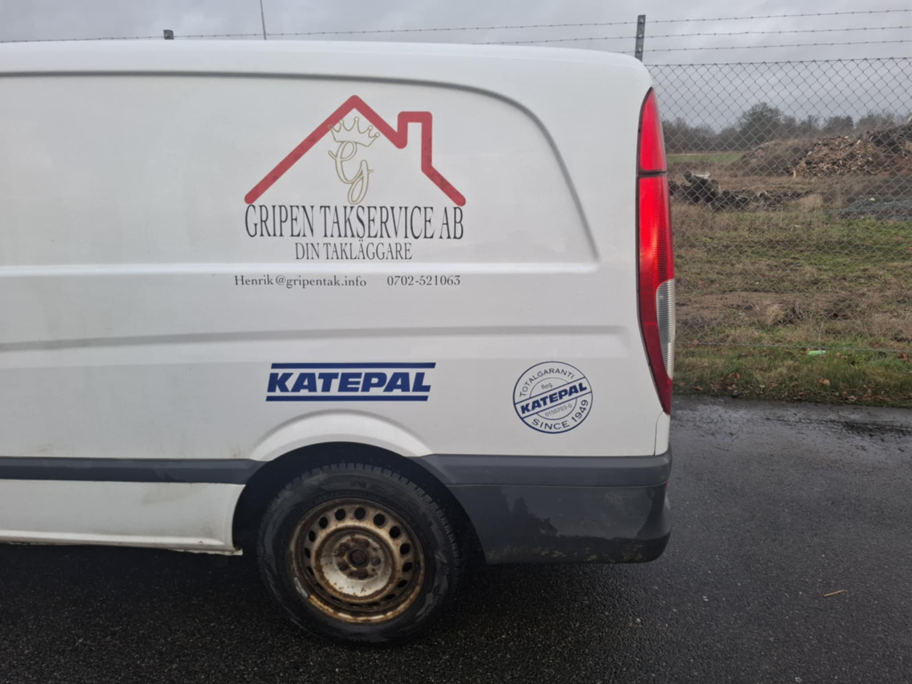

Gripen Takservice AB
Trygga tätskiktslösningar sedan 2023.
Om Oss
Gripen Takservice AB grundades 2023 av Henrik Jönsson med en tydlig vision. Vi är specialiserade på tätskikt för tak, terrasser och innergårdar, och vänder oss till privatpersoner, företag och bostadsrättsföreningar.
- Vår Vision: Att leverera högkvalitativa tätskiktsarbeten med fokus på hållbarhet, precision och kundnöjdhet.
- Kvalitetsgaranti: Som anslutna entreprenörer till Katepal arbetar vi enligt deras strikta riktlinjer för att garantera högsta standard.
- Kontakt: För personlig service och expertis, kontakta Henrik Jönsson direkt på +46 70 252 10 63.
Varför välja oss?
- Brett kunnande inom tätskikt och takarbete
- Arbetar enligt Katepals kvalitetskrav
- ROT-avdrag tillgängligt för privatpersoner
- Kostnadsfri offert
Utvalda Projekt
Listtäckning
Vi utför professionell listtäckning som kombinerar traditionellt hantverk med moderna material för ett hållbart och estetiskt tilltalande resultat.


Sedumtak
Vi anlägger vackra och miljövänliga sedumtak som bidrar till biologisk mångfald, förbättrar luftkvaliteten och ger en naturlig isolering.
Övriga Projekt
Här är ett urval av andra takarbeten vi utfört, som visar vår bredd och kompetens inom olika typer av tätskikt och taklösningar.

Kontakta Oss
Fyll i formuläret nedan eller maila oss direkt på kalkyl@gripentak.info.